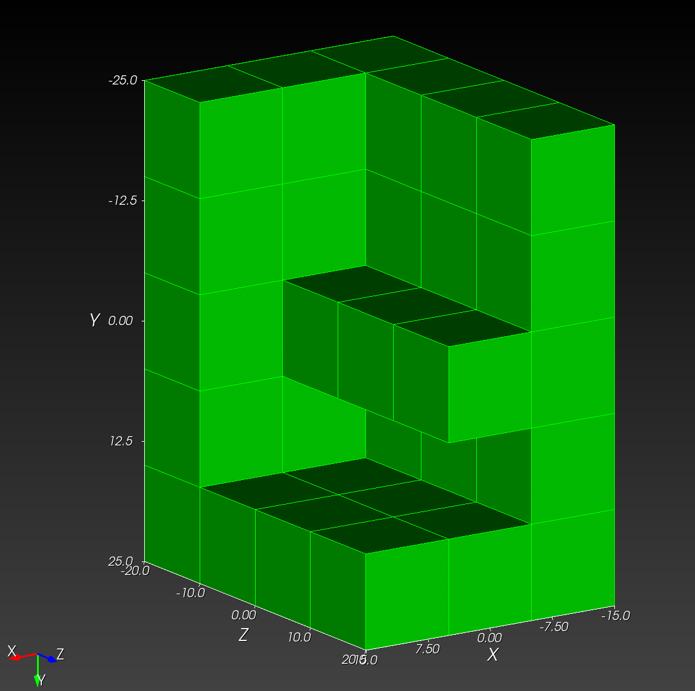

npy_to_mesh
npy_to_image takes a semantic segmentation, encoded as a .npy file, plus a .yml recipe that holds configuration details, and create an Exodus finite element mesh, suitable for analysis with Sierra Solid Mechanics (SSM).
Consider, as an example, the following four images:
| letter_f_slice_0.tif | letter_f_slice_1.tif | letter_f_slice_2.tif | letter_f_slice_3.tif |
|---|


This stack of images as a NumPy array, saved to the letter_f_3d.npy, has the form:
>>> import numpy as np
>>> aa = np.load("letter_f_3d.npy")
>>> aa
array([[[1, 1, 1],
[1, 1, 1],
[1, 1, 1],
[1, 1, 1],
[1, 1, 1]],
[[1, 0, 0],
[1, 0, 0],
[1, 1, 0],
[1, 0, 0],
[1, 1, 1]],
[[1, 0, 0],
[1, 0, 0],
[1, 1, 0],
[1, 0, 0],
[1, 1, 1]],
[[1, 0, 0],
[1, 0, 0],
[1, 1, 0],
[1, 0, 0],
[1, 1, 1]]], dtype=uint8)
where there are four z images, and each image is spanned by the y-x plane.
Three .yml recipes are considered:
- A mesh composed of only of material 1 (
ID=1in the segmentation) - A mesh composed only of material 0 (
ID=0), and - A mesh composed of bht materials (
ID=0andID=1).
Segmentation ID=1
#npy_input: ~/recon3d/docs/userguide/src/npy_to_mesh/letter_f_3d.npy
# npy_input: ~/recon3d/tests/data/letter_f_3d.npy
# output_file: ~/recon3d/docs/userguide/src/npy_to_mesh/letter_f_3d.exo
npy_input: tests/data/letter_f_3d.npy
output_file: docs/userguide/src/npy_to_mesh/letter_f_3d.exo
remove: [0,]
scale_x: 10.0 # float
scale_y: 10.0
scale_z: 10.0
translate_x: -15.0 # float
translate_y: -25.0
translate_z: -20.0
npy_to_mesh letter_f_3d.yml produces:
STATIC
(.venv) recon3d> npy_to_mesh docs/userguide/src/npy_to_mesh/letter_f_3d.yml
This is /Users/chovey/recon3d/src/recon3d/npy_to_mesh.py
Processing file: /Users/chovey/recon3d/docs/userguide/src/numpy_to_mesh/letter_f_3d.yml
Success: database created from file: /Users/chovey/recon3d/docs/userguide/src/npy_to_mesh/letter_f_3d.yml
{'npy_input': '~/recon3d/docs/userguide/src/npy_to_mesh/letter_f_3d.npy', 'output_file': '~/recon3d/docs/userguide/src/npy_to_mesh/letter_f_3d.exo', 'remove': [0], 'scale_x': 10.0, 'scale_y': 10.0, 'scale_z': 10.0, 'translate_x': -15.0, 'translate_y': -25.0, 'translate_z': -20.0}
Running automesh with the following command:
mesh -i /Users/chovey/recon3d/docs/userguide/src/npy_to_mesh/letter_f_3d.npy -o /Users/chovey/recon3d/docs/userguide/src/npy_to_mesh/letter_f_3d.exo -r 0 --xscale 10.0 --yscale 10.0 --zscale 10.0 --xtranslate -15.0 --ytranslate -25.0 --ztranslate -20.0
Created temporary file in xyz order for automesh: /Users/chovey/recon3d/docs/userguide/src/npy_to_mesh/letter_f_3d_xyz.npy
Wrote output file: /Users/chovey/recon3d/docs/userguide/src/npy_to_mesh/letter_f_3d.exo
Temporary file successfully deleted: /Users/chovey/recon3d/docs/userguide/src/npy_to_mesh/letter_f_3d_xyz.npy
DYNAMIC
npy_to_mesh letter_f_3d.yml
This is /opt/hostedtoolcache/Python/3.11.12/x64/lib/python3.11/site-packages/recon3d/npy_to_mesh.py
Processing file: /home/runner/work/recon3d/recon3d/docs/userguide/src/npy_to_mesh/letter_f_3d.yml
Success: database created from file: /home/runner/work/recon3d/recon3d/docs/userguide/src/npy_to_mesh/letter_f_3d.yml
{'npy_input': 'tests/data/letter_f_3d.npy', 'output_file': 'docs/userguide/src/npy_to_mesh/letter_f_3d.exo', 'remove': [0], 'scale_x': 10.0, 'scale_y': 10.0, 'scale_z': 10.0, 'translate_x': -15.0, 'translate_y': -25.0, 'translate_z': -20.0}
The resulting mesh appears in Cubit as

Tip: To reproduce the view in Cubit to match the NumPy ordering, do the following
Cubit>
view iso
up 0 -1 0
view from 1000 -500 1500
Segmentation ID=0
npy_input: ~/recon3d/docs/userguide/src/npy_to_mesh/letter_f_3d.npy
output_file: ~/recon3d/docs/userguide/src/npy_to_mesh/letter_f_3d_inverted.exo
remove: [1,]
scale_x: 10.0 # float
scale_y: 10.0
scale_z: 10.0
translate_x: -15.0 # float
translate_y: -25.0
translate_z: -20.0
Run npy_to_mesh on letter_f_3d_inverted.yml,
STATIC
(.venv) recon3d> npy_to_mesh docs/userguide/src/npy_to_mesh/letter_f_3d_inverted.yml
This is /Users/chovey/recon3d/src/recon3d/npy_to_mesh.py
Processing file: /Users/chovey/recon3d/docs/userguide/src/npy_to_mesh/letter_f_3d_inverted.yml
Success: database created from file: /Users/chovey/recon3d/docs/userguide/src/npy_to_mesh/letter_f_3d_inverted.yml
{'npy_input': '~/recon3d/docs/userguide/src/npy_to_mesh/letter_f_3d.npy', 'output_file': '~/recon3d/docs/userguide/src/npy_to_mesh/letter_f_3d_inverted.exo', 'remove': [1], 'scale_x': 10.0, 'scale_y': 10.0, 'scale_z': 10.0, 'translate_x': -15.0, 'translate_y': -25.0, 'translate_z': -20.0}
Running automesh with the following command:
mesh -i /Users/chovey/recon3d/docs/userguide/src/npy_to_mesh/letter_f_3d.npy -o /Users/chovey/recon3d/docs/userguide/src/npy_to_mesh/letter_f_3d_inverted.exo -r 1 --xscale 10.0 --yscale 10.0 --zscale 10.0 --xtranslate -15.0 --ytranslate -25.0 --ztranslate -20.0
Created temporary file in xyz order for automesh: /Users/chovey/recon3d/docs/userguide/src/npy_to_mesh/letter_f_3d_xyz.npy
Wrote output file: /Users/chovey/recon3d/docs/userguide/src/npy_to_mesh/letter_f_3d_inverted.exo
Temporary file successfully deleted: /Users/chovey/recon3d/docs/userguide/src/npy_to_mesh/letter_f_3d_xyz.npy
DYNAMIC
npy_to_mesh letter_f_3d_inverted.yml
This is /opt/hostedtoolcache/Python/3.11.12/x64/lib/python3.11/site-packages/recon3d/npy_to_mesh.py
Processing file: /home/runner/work/recon3d/recon3d/docs/userguide/src/npy_to_mesh/letter_f_3d_inverted.yml
Success: database created from file: /home/runner/work/recon3d/recon3d/docs/userguide/src/npy_to_mesh/letter_f_3d_inverted.yml
{'npy_input': '~/recon3d/docs/userguide/src/npy_to_mesh/letter_f_3d.npy', 'output_file': '~/recon3d/docs/userguide/src/npy_to_mesh/letter_f_3d_inverted.exo', 'remove': [1], 'scale_x': 10.0, 'scale_y': 10.0, 'scale_z': 10.0, 'translate_x': -15.0, 'translate_y': -25.0, 'translate_z': -20.0}

Remark: For consistency with the following two-material case, we have changed the color from green, the original color on import into Cubit, to yellow.
Segmentation ID=0 and ID=1
npy_input: ~/recon3d/docs/userguide/src/npy_to_mesh/letter_f_3d.npy
output_file: ~/recon3d/docs/userguide/src/npy_to_mesh/letter_f_3d_two_material.exo
remove: []
scale_x: 10.0 # float
scale_y: 10.0
scale_z: 10.0
translate_x: -15.0 # float
translate_y: -25.0
translate_z: -20.0
Run npy_to_mesh on letter_f_3d_inverted.yml,
STATIC
(.venv) recon3d> npy_to_mesh docs/userguide/src/npy_to_mesh/letter_f_3d_two_material.yml
This is /Users/chovey/recon3d/src/recon3d/npy_to_mesh.py
Processing file: /Users/chovey/recon3d/docs/userguide/src/npy_to_mesh/letter_f_3d_two_material.yml
Success: database created from file: /Users/chovey/recon3d/docs/userguide/src/npy_to_mesh/letter_f_3d_two_material.yml
{'npy_input': '~/recon3d/docs/userguide/src/npy_to_mesh/letter_f_3d.npy', 'output_file': '~/recon3d/docs/userguide/src/npy_to_mesh/letter_f_3d_two_material.exo', 'remove': [], 'scale_x': 10.0, 'scale_y': 10.0, 'scale_z': 10.0, 'translate_x': -15.0, 'translate_y': -25.0, 'translate_z': -20.0}
Running automesh with the following command:
mesh -i /Users/chovey/recon3d/docs/userguide/src/npy_to_mesh/letter_f_3d.npy -o /Users/chovey/recon3d/docs/userguide/src/npy_to_mesh/letter_f_3d_two_material.exo --xscale 10.0 --yscale 10.0 --zscale 10.0 --xtranslate -15.0 --ytranslate -25.0 --ztranslate -20.0
Created temporary file in xyz order for automesh: /Users/chovey/recon3d/docs/userguide/src/npy_to_mesh/letter_f_3d_xyz.npy
Wrote output file: /Users/chovey/recon3d/docs/userguide/src/npy_to_mesh/letter_f_3d_two_material.exo
Temporary file successfully deleted: /Users/chovey/recon3d/docs/userguide/src/npy_to_mesh/letter_f_3d_xyz.npy
DYNAMIC
npy_to_mesh letter_f_3d_two_material.yml
<!-- npy_to_mesh letter_f_3d_two_material.yml -->